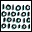
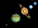

Appendix 1a: Solar System Data
Note: The data on these pages has been compiled from a number of
sources none of which agree on all items.
Some of this data, especially for the smaller satellites, is not
very accurate in the first place. Furthermore, orbits
vary slightly over time due to gravitational interactions.
The accuracy of mass and density
data is also limited by the uncertainty in the value of the
gravitational constant.
See below for a key to the columns.
Orbital and Historical Data
Distance O_Period
Name # Orbits (000 km) (days) Incl Eccen Discoverer Date A.K.A.
--------- ---- ------- -------- -------- ----- ----- ---------- ---- -------
Sun - - - - - - - - Sol (0)
Mercury I Sun 57910 87.97 7.00 0.21 - - (0)
Venus II Sun 108200 224.70 3.39 0.01 - - (0)
Earth III Sun 149600 365.26 0.00 0.02 - - (0)
Mars IV Sun 227940 686.98 1.85 0.09 - - (0)
Jupiter V Sun 778330 4332.71 1.31 0.05 - - (0)
Saturn VI Sun 1429400 10759.50 2.49 0.06 - - (0)
Uranus VII Sun 2870990 30685.00 0.77 0.05 Herschel 1781 (0)
Neptune VIII Sun 4504300 60190.00 1.77 0.01 Adams(9) 1846 (0)
Pluto IX Sun 5913520 90550 17.15 0.25 Tombaugh 1930 (0)
Moon I Earth 384 27.32 5.14 0.05 - - Luna (a, 0)
Phobos I Mars 9 0.32 1.00 0.02 Hall 1877
Deimos II Mars 23 1.26 1.80 0.00 Hall 1877 (b)
Metis XVI Jupiter 128 0.29 0.00 0.00 Synnott 1979 1979 J 3
Adrastea XV Jupiter 129 0.30 0.00 0.00 Jewitt(1) 1979 1979 J 1
Amalthea V Jupiter 181 0.50 0.40 0.00 Barnard 1892
Thebe XIV Jupiter 222 0.67 0.80 0.02 Synnott 1979 1979 J 2
Io I Jupiter 422 1.77 0.04 0.00 Galileo(2) 1610
Europa II Jupiter 671 3.55 0.47 0.01 Galileo(2) 1610
Ganymede III Jupiter 1070 7.15 0.19 0.00 Galileo(2) 1610
Callisto IV Jupiter 1883 16.69 0.28 0.01 Galileo(2) 1610
Themisto XVIIIJupiter 7507 Sheppard(i) 2000 S/1975 J 1, S/2000 J1
Leda XIII Jupiter 11094 238.72 27.00 0.15 Kowal 1974
Himalia VI Jupiter 11480 250.57 28.00 0.16 Perrine 1904
Lysithea X Jupiter 11720 259.22 29.00 0.11 Nicholson 1938
Elara VII Jupiter 11737 259.65 28.00 0.21 Perrine 1905
Ananke XII Jupiter 21200 -631 147.00 0.17 Nicholson 1951
Carme XI Jupiter 22600 -692 163.00 0.21 Nicholson 1938
Pasiphae VIII Jupiter 23500 -735 147.00 0.38 Melotte 1908
Sinope IX Jupiter 23700 -758 153.00 0.28 Nicholson 1914
Iocaste XXIV Jupiter 20216 Sheppard(i) 2000 S/2000 J 3
Harpalyke XXII Jupiter 21132 Sheppard(i) 2000 S/2000 J 5
Praxidike XXVIIJupiter 20964 Sheppard(i) 2000 S/2000 J 7
Taygete XX Jupiter 23312 Sheppard(i) 2000 S/2000 J 9
Chaldene XXI Jupiter 23387 Sheppard(i) 2000 S/2000 J 10
Kalyke XXIIIJupiter 23745 Sheppard(i) 2000 S/2000 J 2
Callirrhoe XVII Jupiter 24100 Sheppard(i) 2000 S/1999 J 1
Megaclite XIX Jupiter 23911 Sheppard(i) 2000 S/2000 J 8
Isonoe XXVI Jupiter 23078 Sheppard(i) 2000 S/2000 J 6
Erinome XXV Jupiter 23168 Sheppard(i) 2000 S/2000 J 4
Pan XVIIISaturn 134 0.58 0.00 0.00 Showalter 1990 1981 S 13
Atlas XV Saturn 138 0.60 0.00 0.00 Terrile 1980 1980 S 28
Prometheus XVI Saturn 139 0.61 0.00 0.00 Collins(3) 1980 1980 S 27
Pandora XVII Saturn 142 0.63 0.00 0.00 Collins(3) 1980 1980 S 26
Epimetheus XI Saturn 151 0.69 0.34 0.01 Walker(8) 1980 1980 S 3
Janus X Saturn 151 0.69 0.14 0.01 Dollfus 1966 1980 S 1
Mimas I Saturn 186 0.94 1.53 0.02 Herschel 1789
Enceladus II Saturn 238 1.37 0.02 0.00 Herschel 1789
Tethys III Saturn 295 1.89 1.09 0.00 Cassini 1684
Telesto XIII Saturn 295 1.89 0.00 0.00 Smith(6) 1980 1980 S 13
Calypso XIV Saturn 295 1.89 0.00 0.00 Pascu(7) 1980 1980 S 25
Dione IV Saturn 377 2.74 0.02 0.00 Cassini 1684
Helene XII Saturn 377 2.74 0.20 0.01 Laques(4) 1980 1980 S 6, Dione B
Rhea V Saturn 527 4.52 0.35 0.00 Cassini 1672
Titan VI Saturn 1222 15.95 0.33 0.03 Huygens 1655
Hyperion VII Saturn 1481 21.28 0.43 0.10 Bond(5) 1848
Iapetus VIII Saturn 3561 79.33 14.72 0.03 Cassini 1671
Phoebe IX Saturn 12952 -550.48 175.30 0.16 Pickering 1898
Cordelia VI Uranus 50 0.34 0.14 0.00 Voyager 2 1986 1986 U 7
Ophelia VII Uranus 54 0.38 0.09 0.00 Voyager 2 1986 1986 U 8
Bianca VIII Uranus 59 0.43 0.16 0.00 Voyager 2 1986 1986 U 9
Cressida IX Uranus 62 0.46 0.04 0.00 Voyager 2 1986 1986 U 3
Desdemona X Uranus 63 0.47 0.16 0.00 Voyager 2 1986 1986 U 6
Juliet XI Uranus 64 0.49 0.06 0.00 Voyager 2 1986 1986 U 2
Portia XII Uranus 66 0.51 0.09 0.00 Voyager 2 1986 1986 U 1
Rosalind XIII Uranus 70 0.56 0.28 0.00 Voyager 2 1986 1986 U 4
Belinda XIV Uranus 75 0.62 0.03 0.00 Voyager 2 1986 1986 U 5
Puck XV Uranus 86 0.76 0.31 0.00 Voyager 2 1985 1985 U 1
Miranda V Uranus 130 1.41 4.22 0.00 Kuiper 1948
Ariel I Uranus 191 2.52 0.00 0.00 Lassell 1851
Umbriel II Uranus 266 4.14 0.00 0.00 Lassell 1851
Titania III Uranus 436 8.71 0.00 0.00 Herschel 1787
Oberon IV Uranus 583 13.46 0.00 0.00 Herschel 1787
Caliban XVI Uranus 7169 -580 140. 0.08 Gladman (c) 1997 1997 U 1
Stephano XX Uranus 7948 -674 143. 0.24 Gladman (f) 1999 1999 U 2
Sycorax XVII Uranus 12213 -1289 153. 0.51 Nicholson(e) 1997 1997 U 2
Prospero XVIIIUranus 16568 -2019 152. 0.44 Holman (g) 1999 1999 U 3
Setebos XIX Uranus 17681 -2239 158. 0.57 Kavelaars(d) 1999 1999 U 1
Trinculo XXI Uranus Gladman (f) 2001 2001 U 1
Naiad III Neptune 48 0.29 0.00 0.00 Voyager 2 1989 1989 N 6
Thalassa IV Neptune 50 0.31 4.50 0.00 Voyager 2 1989 1989 N 5
Despina V Neptune 53 0.33 0.00 0.00 Voyager 2 1989 1989 N 3
Galatea VI Neptune 62 0.43 0.00 0.00 Voyager 2 1989 1989 N 4
Larissa VII Neptune 74 0.55 0.00 0.00 Reitsema (h) 1989 1989 N 2
Proteus VIII Neptune 118 1.12 0.00 0.00 Voyager 2 1989 1989 N 1
Triton I Neptune 355 -5.88 157.00 0.00 Lassell 1846
Nereid II Neptune 5513 360.13 29.00 0.75 Kuiper 1949
Charon I Pluto 20 6.39 98.80 0.00 Christy 1978 1978 P 1
Key:
Orbits Sun or planet about which it orbits.
Distance Mean distance (semimajor axis) between centers x1000 km.
Date Year discovered.
O_Period Sidereal period of orbit in days (negative=retrograde).
Incl Orbital inclination.
Eccen Orbital eccentricity.
A.K.A Object's provisional name.
Notes:
(0) many other names in use
(1) & Danielson
(2) & Marius
(3) & others
(4) & Lecacheux
(5) & Lassell
(6) & Reitsema, Larson & Fountain
(7) & Seidelmann, Baum & Currie
(8) & Larson & Fountain
(9) & Le Verrier & Galle & d'Arrest
(a) Luna's inclination varies from 18.2 to 28.6
(b) Deimos' inclination varies from 0.9 to 2.7
(c) & Nicholson, Burns, & Kavelaars
(d) & Gladman, Holman, Petit, & Scholl
(e) & Gladman, Burns, & Kavelaars
(f) & Holman, Kavelaars, Petit, & Scholl
(g) & Kavelaars, Gladman, Petit, & Scholl
(h) & Hubbard, Tholen, & Lebofsky
(i) & Jewitt, Fernandez, Magnier
This table and those on the other data pages were prepared with the generous help of
Dr. Ellis D. Miner at JPL;
his assistance was invaluable.
But any errors are mine.
I would greatly appreciate any bug reports and/or updates to this data.

... Appendices
... Orbital
... Physical
... Misc
... Extrema
... 
Bill Arnett; last updated:
2003 Jul 28